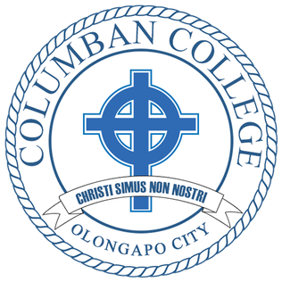

 |
Columban College High School |
Contatct Info Gallery Programs Admission About Home |
The seal of Columban College bears the Celtic cross surrounded by the name of the school. Across it is St. Columban's motto "Christi Simus Non Nostri" or "We Are Christ's Not Our Own" in English. The Celtic cross is sometimes called a "Wheel Cross" because of the circle at the center connecting the beams. The circle is a symbol for God whom unites all men in His love. The cross represents Jesus Christ, the Son of God, our Lord and Savior, who is the foundation of our Christian life. He is the One who ennobles man, gives meaning to human life and is the model we present to our students. |
This institution was first known as Naval Reservation Junior College. It was passed by Joben admana family in 1961 to the Columban Fathers. The first director of Columban College was Rev. Thomas L. Convery with Rev. Fr. Paul O'Malley SSC as his assistant.
Columban Sisters were assigned in 1962 to assist in the administrative and teaching programs. In that same year the Parish of St. Columban was inaugurated with O'Malley as its parish priest. In 1965, Convery was succeeded by Rev. William F. Sullivan, SSC as school director. Rev. Fr. John Curry SSC took over in 1971 and Rev. Fr. Edward McKenna was the school director from 1973 to 1975. From 1976 to 1982 Rev. Fr. Richard Cannon SSC was the school director. He was succeeded by Rev. Fr. Vincent Lyons from 1982 to 1983. In 1983, the administration of the college was handed over by the Columban Fathers to the Vincentian Fathers. Rev. Fr. Constancio Gan was appointed school director.
The Daughters of Charity took over when the contract of the Vincentians expired in 1989 when Sr. Stella Real D.C. was appointed school director.
In 1993 Most Reverend Bishop Deogracias Iniquez Jr., the head of the diocesan schools, took over the administration of Columban College. Like in any diocesan school, the director of an institution comes from the diocesan clergy assigned in the diocese in Iba.
Rev. Fr. Daniel O. Presto was appointed as school director in 1993 and later became the president until October 2005. He was succeeded by Rev. Fr. Roland M. Almo and then by Rev. Msgr. Crisostomo A. Cacho and is presently the school president.
St. Columban also known as Columbanus was born in the province of Leinster, Ireland, about the year c. 543. He was educated at home by excellent tutors who introduced him to the study of Liberal Arts. He was about 17 or 18 years old when he decided to dedicate his life to God so he left home to continue his studies in a monastery under the guidance of Abbot Sinell of the community of Cleenish in Northern Ireland. There, he was able to deepen his study of Sacred Scripture. He remained in this monastery for about five (5) years before moving on to a larger monastery at Bangor. St. Columban in full agreement with his abbot, Comgall zealously practiced the severe discipline of the monastery, leading a life of prayer, asceticism and study. While at Bangor, he was ordained a priest. His life and the Abbot's example influenced the conception of monasticism that developed in St. Columban over time and that he subsequently spread in the course of his life. St. Columban rose to be one of the great teachers of Bangor. St. Columban stayed in Bangor for many years; but there grew in him a desire to travel outside Ireland to spread the message of the Gospel among the peoples of Europe who had been overrun by barbarians. His abbot, St Comgall, gave him and his companions’ permission to leave and begin their journey. He was then about 40. Wherever they wandered, St. Columban preached eloquently and the example of the lives of his group made a deep impression on people. The local King pressed St. Columban and his friends to settle in eastern France and establish a community. Over time, the monastery he founded had flourished as a centre of worship, learning and service to the local people. As more young men came to join him, St. Columban established two more houses in the area. After firmly establishing these monasteries, St. Columban again took to the road. He continued to journey through France, Germany, Switzerland and finally across the Alps into Italy, preaching the good news of Jesus wherever he went and establishing another community at Bregenz in Austria. This was St. Columban's fourth monastery, founded when he was nearly 70 years old. Eventually, St. Columban settled down and built his final monastery at Bobbio, near Genoa, where he died on November 23, 615. St. Columban always tried to balance the demands of work, both in the community and with the local people, with time for withdrawal and quiet prayer. In this he was following the example of Jesus himself. St. Columban left a legacy of many monasteries which taught and served the local people. During his travels, St. Columban showed great courage which sometimes led him to fearlessly admonish people he encountered even at much cost to himself. St. Columban became a wanderer for Christ. One of his greatest sayings summarizes his life and his work, 'Let us be of Christ not of ourselves'. Although St. Columban’s rule was demanding, he was likewise very close to nature. Many legends grew up a round him that doves were pictured playing in the folds of his cowl. Birds also approached him and nestled in the palms of his hands. Even wild beasts obeyed his commands. In his sermon “Concerning the Faith” he wrote in elegant Latin, Intellege, si vis scire Creatorem, Creaturam. (If you wish to understand the Creator, learn about creature(s). |
Columban College, Inc.Columban College is a Catholic institution dedicated to serve the needs of the city and the surrounding provinces of Zambales and Bataan. |
Contact UsMain Campus#1 First St., New Asinan, Olongapo City (047) 222-3329 Barretto Campus Rizal Street Extension.Bo,Barretto,Olongapo City (047) 222-9360 Email: info@columban.edu.ph |
Social Media
|